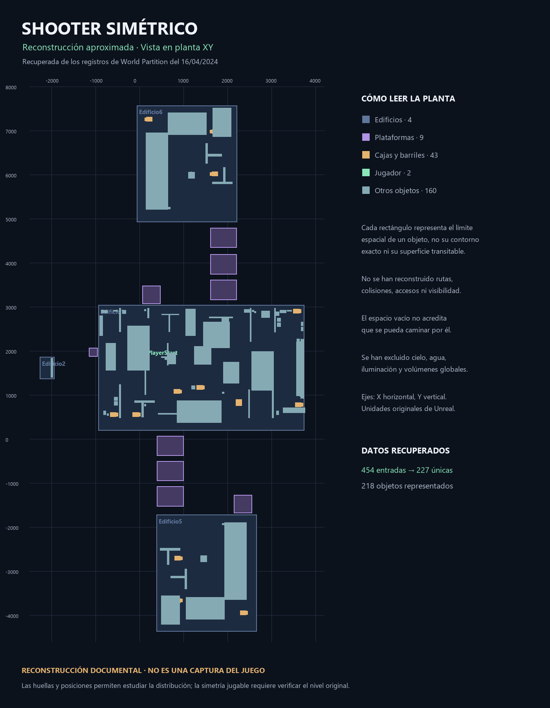

Shooter simétrico.
¿Basta con repetir la forma para equilibrar el combate?
Un experimento de diseño de mapa para CoD, revisado a partir de la distribución recuperada del proyecto de Unreal. La pregunta es cómo ofrecer oportunidades comparables a ambos lados sin hacer que todas las decisiones sean iguales.
Leer la distribución antes de hablar de equilibrio
La reconstrucción muestra un volumen central amplio, otros dos volúmenes separados y grupos de plataformas entre ellos. Dentro aparecen objetos distribuidos a diferentes distancias. Esta lectura sugiere preguntas sobre conexiones y zonas de encuentro, pero no permite afirmar por dónde se puede circular.

Hipótesis de diseño
Una disposición simétrica podría facilitar que ambos equipos dispongan de distancias, exposición y opciones equivalentes. La simetría geométrica sería el punto de partida; el equilibrio tendría que comprobarse jugando.
El análisis siguiente plantea posibilidades para una nueva iteración. No presenta resultados de partidas ni atribuye estas decisiones al desarrollo original.
Equivalencia de oportunidades, variedad de decisiones
Distribución simétrica
A favor: permite comparar los dos lados y detectar diferencias de distancia o acceso.
Riesgo: repetir la forma no garantiza igualdad si cambian altura, visibilidad o tiempos de llegada.
Una zona central reconocible
A favor: podría concentrar el encuentro y servir de referencia para orientarse.
Riesgo: si controla todos los accesos, dominar el centro podría dejar al rival sin alternativas.
Rutas alternativas
A favor: una vía directa y otra de rodeo podrían permitir elegir entre rapidez y exposición.
Riesgo: un rodeo demasiado largo se vuelve irrelevante; demasiados accesos pueden dificultar leer las amenazas.
Objetos como coberturas
A favor: si su tamaño y colisión lo permiten, podrían dividir desplazamientos largos en decisiones más pequeñas.
Riesgo: una cobertura que protege demasiados ángulos puede favorecer posiciones difíciles de disputar. Más objetos también pueden añadir ruido visual.
La planta necesita una segunda lectura a escala de jugador
- Distancias y ritmo: medir cuánto tarda cada lado en llegar al primer encuentro, a los cruces y a los objetivos propuestos.
- Líneas de visión: comprobar desde la cámara del jugador qué accesos se pueden vigilar a la vez y dónde existe exposición sin respuesta.
- Alturas y coberturas: revisar saltos, esquinas, anchura de paso y protección real; sus huellas en planta no bastan.
- Apariciones y retorno al combate: ensayar posiciones desde las que se pueda salir con alternativas, evitando enfrentar al jugador inmediatamente a una posición dominante.
- Orientación: diferenciar visualmente los lados con señales o materiales sin introducir una ventaja de visibilidad para uno de ellos.
- Modo y número de jugadores: fijarlos antes de evaluar el mapa. Una distribución podría funcionar para un enfrentamiento pequeño y saturarse con más participantes.
Intercambiar lados y observar dónde se rompe la equivalencia
Primero reconstruiría el bloqueado y verificaría los accesos. Después probaría una configuración fija de jugadores y reglas, intercambiando los equipos de lado y registrando tiempos de llegada, lugares de muerte y rutas utilizadas.
Buscaría posiciones que concentren demasiadas eliminaciones, salidas poco utilizadas o diferencias que persistan al cambiar de lado. Ajustaría una variable cada vez —una cobertura, un acceso o una distancia— para poder relacionar el cambio con lo observado.
El objetivo sería comprobar si existen varias opciones útiles y oportunidades comparables. Todavía no hay datos de prueba que permitan afirmar que el mapa está equilibrado.